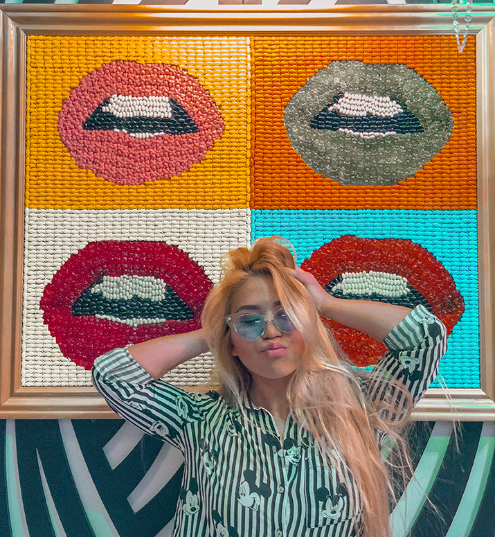

Hi. My name is Aziza. I graduated from high school in my home country, and now I’m here in CCSF studying visual media design to ultimately get a bachelor’s degree in graphic design. I took some architecture and computer science classes and realized that I want to have them all in one field. That is how I discovered UI/UX design. I would like to be fluent in Photoshop, Illustration, Animation, and other Adobe tools. But more specifically I want to learn how to create and design websites.